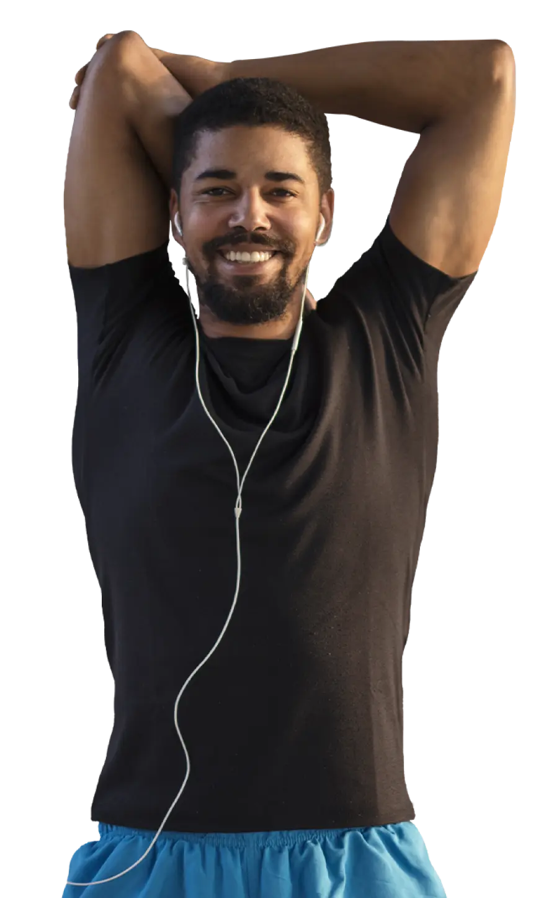

INVISTA NO SEU FUTURO
Com UNASP, você investe na sua melhor versão e se torna mestre. Seja buscando a excelência naquilo que você faz de melhor ou trilhando um novo caminho, aqui você se torna protagonista.
Linha de Pesquisa:
Qualidade e estilo de vida na promoção da Saúde
Socioambiental:

Determinantes sociais da saúde
